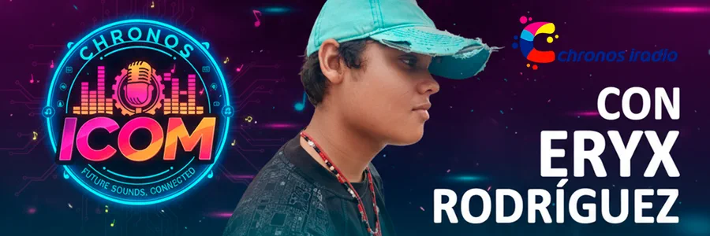
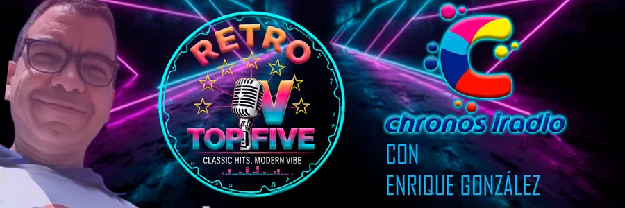
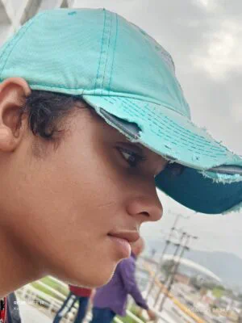
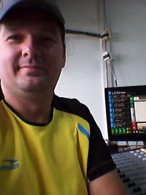
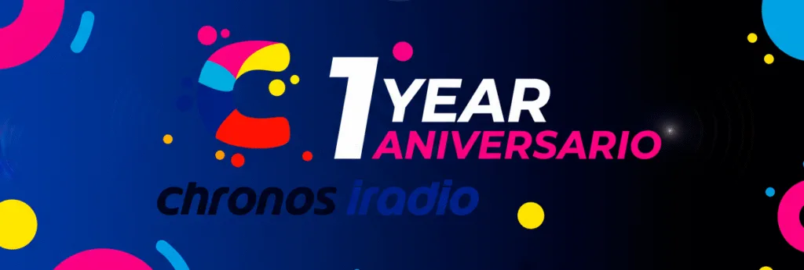

Chronos iRadio
Los clasicos de la musica de todos los tiempos. Rock, pop, soul, jazz y musica latina de los ultimos 50 anos, desde Venezuela para el mundo.
Nuestros Programas
Cada dia, un viaje musical a traves de las decadas. Grandes exitos, artistas iconicos y la historia detras de las canciones.
Navegando entre Decadas
Un recorrido musical a traves de las mejores canciones de diferentes epocas y generos que marcaron generaciones.
Musical
Chronos iCom
Microprograma de comunicacion y entretenimiento conducido por las nuevas voces de la radio.
Entretenimiento
Top 5
Los cinco temas mas populares y escuchados de la semana en un solo programa.
RankingMundo Marino
Micro radial dedicado al fascinante mundo marino con Km Rodriguez. Explorando la vida bajo el agua.
CulturaQuienes Somos
Apasionados de la musica que conocen a fondo el impacto de cada cancion en la cultura popular. Haz clic para saber mas.
Km Rodriguez
Creador & Director
Eryx Rodriguez
Produccion & LocutorEnrique Gonzalez
Voz & ImagenFranmary Fernandez
Locutora
Victor Grinfelds
Ingeniero